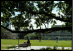
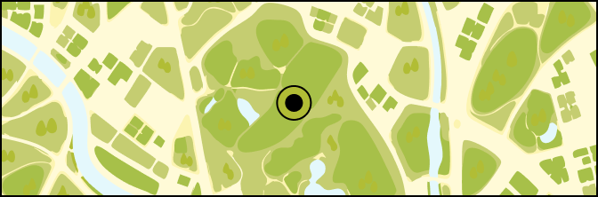

100m
200m
300m
내 근처 탐험 추천
어디로 탐험을 떠나볼까요?
지도에서 탐험지를 선택하면
만날 수 있는 친구들을 미리 볼 수 있어요.

햇살 근린 공원
걸어서 5분 · 지금 방아깨비가 많아요
초고속 탐험가 선우,
오늘은 어떤 친구를 만나 볼까요?
9:41
☀︎
맑음 · 오후 3시
홈
도감
관찰
친구
마이
햇살 근린 공원
걸어서 5분 · 지금 방아깨비가 많아요

여기서 지금 만날 수 있어요.
탐험 시작하기
들판에서 삭제할까요?
삭제하기
닫기
취소
삭제하기
들판에서 삭제했어요.